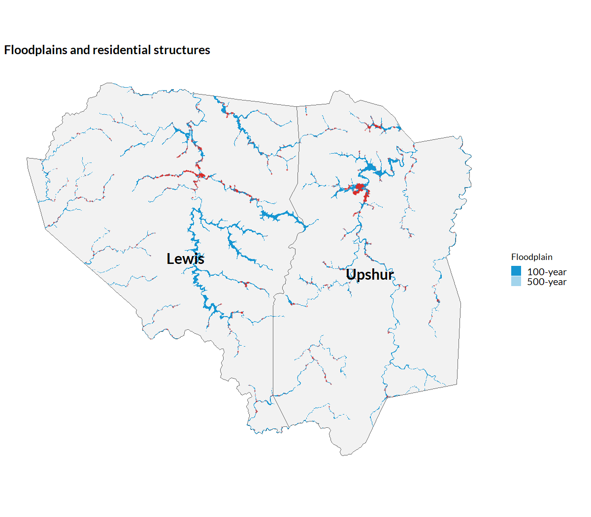

FEMA Floodplains
get_fema_floodplain.RmdOverview
The get_fema_floodplain() function retrieves 100-year
and 500-year floodplain boundaries from FEMA’s National Flood Hazard
Layer (NFHL). The 100-year floodplain—formally, the Special Flood Hazard
Area—comprises areas with a one percent or greater annual chance of
flooding; the 500-year floodplain comprises areas with between a 0.2
percent and one percent annual chance of flooding.
Because the NFHL is a national dataset far too large to download in full, the function requires a bounding box (or an sf object from which a bounding box can be derived) and returns only the flood zone polygons that intersect it.
Note that the NFHL only covers communities with effective digital flood insurance rate maps; areas without digital maps return no polygons even though they may face flood risk.
Setup
library(climateapi)
library(tidyverse)
library(sf)
library(urbnthemes)
set_urbn_defaults(style = "map")Retrieving floodplains
We illustrate with Lewis and Upshur counties in central West Virginia. We first obtain the county boundaries, then request all floodplain polygons intersecting their combined bounding box.
counties = tigris::counties(state = "54", cb = TRUE, year = 2023, progress_bar = FALSE) %>%
filter(GEOID %in% c("54041", "54097")) %>%
st_transform(5070)
floodplains1 = get_fema_floodplain(bbox = counties)Polygons are returned wherever they intersect the bounding box, so we clip them to the two counties themselves.
floodplains2 = floodplains1 %>%
st_transform(5070) %>%
st_intersection(counties %>% select(county_name = NAME))
floodplains2 %>%
st_drop_geometry() %>%
count(county_name, floodplain, flood_zone)
#> county_name floodplain flood_zone n
#> 1 Lewis 100-year A 48
#> 2 Lewis 100-year AE 65
#> 3 Lewis 500-year X 99
#> 4 Upshur 100-year A 37
#> 5 Upshur 100-year AE 26
#> 6 Upshur 500-year X 18Identifying structures in the floodplain
The get_structures() function returns building points
from the USA Structures dataset. With
keep_structures = TRUE, it returns the individual structure
records alongside the county-level summary.
structures1 = get_structures(
boundaries = counties,
geography = "county",
keep_structures = TRUE)
structures2 = structures1$structures_raw %>%
st_transform(5070) %>%
filter(county_fips %in% c("54041", "54097"))We classify each structure by the floodplain it falls in. A structure is counted in the 500-year floodplain only if it is outside the 100-year floodplain; because FEMA maps the 500-year zone as the increment beyond the 100-year zone, this classification treats the two categories as mutually exclusive.
floodplain_100 = floodplains2 %>% filter(floodplain == "100-year") %>% st_union()
floodplain_500 = floodplains2 %>% filter(floodplain == "500-year") %>% st_union()
structures3 = structures2 %>%
mutate(
in_100_year = st_intersects(., floodplain_100, sparse = FALSE)[, 1],
in_500_year = st_intersects(., floodplain_500, sparse = FALSE)[, 1],
floodplain = case_when(
in_100_year ~ "100-year",
in_500_year ~ "500-year",
.default = "Outside floodplain"),
structure_type = if_else(
occupancy_class == "Residential", "Residential", "Non-residential"))Mapping floodplains and residential structures
The map below shows the 100- and 500-year floodplains across the two counties, with points marking every residential structure located in either floodplain.
residential_in_floodplain = structures3 %>%
filter(structure_type == "Residential", floodplain != "Outside floodplain")
ggplot() +
geom_sf(data = counties, fill = "grey95", color = "grey40") +
geom_sf(
data = floodplains2,
aes(fill = floodplain),
color = NA) +
geom_sf(
data = residential_in_floodplain,
size = 0.4,
alpha = 0.3,
color = "#db2b27") +
geom_sf_text(
data = counties,
aes(label = NAME),
size = 5,
fontface = "bold",
color = "black") +
scale_fill_manual(
values = c("100-year" = "#1696d2", "500-year" = "#a2d4ec"),
name = "Floodplain") +
labs(
title = "Floodplains and residential structures") +
theme_urbn_map()
Structure counts by type and floodplain
Finally, we tabulate structures by structure type and floodplain category.
structures3 %>%
st_drop_geometry() %>%
count(structure_type, floodplain) %>%
pivot_wider(names_from = floodplain, values_from = n, values_fill = 0) %>%
select(
`Structure type` = structure_type,
`100-year floodplain` = `100-year`,
`500-year floodplain` = `500-year`,
`Outside floodplain` = `Outside floodplain`) %>%
knitr::kable(
caption = "Structures by type and floodplain, Lewis and Upshur counties, WV")| Structure type | 100-year floodplain | 500-year floodplain | Outside floodplain |
|---|---|---|---|
| Non-residential | 630 | 122 | 3922 |
| Residential | 1908 | 384 | 22046 |